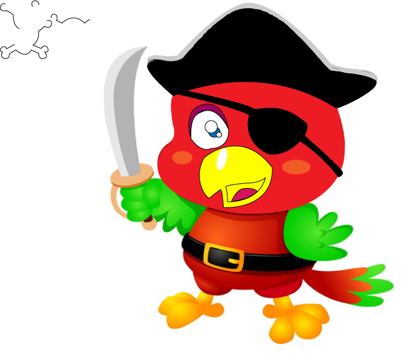
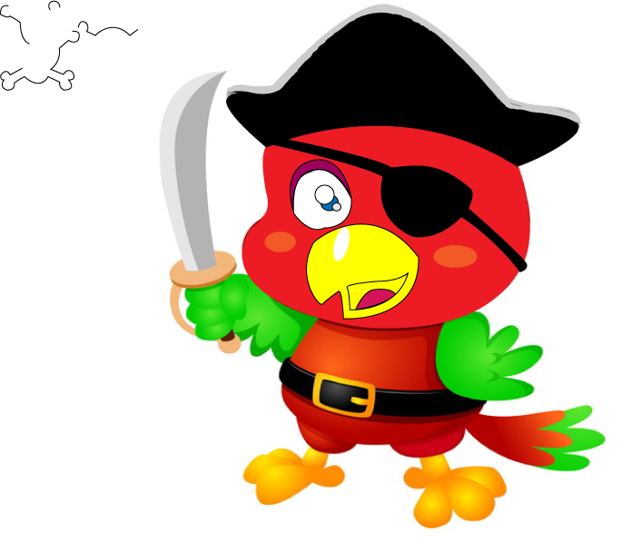

DISEÑO
diseño creativo , debe considerar las formas en las que puede transmitir información de manera más efectiva sobre el diseño que está buscando,
sin obstaculizar la creatividad del diseñador con el que está trabajando. Esto significa que debe comunicar claramente cualquier expectativa y
deseo que tenga con respecto al diseño final. Su resumen de diseño debe garantizar que el diseñador comprenda lo que desea y tenga suficiente información
para crearlo correctamente. Una de las mejores formas de garantizar un resumen eficaz es proporcionar ejemplos de diseños o ideas similares que haya visto
mientras se mantiene abierto a los conceptos del diseñador.
Un resumen de diseño creativo es un tipo de documento en el que le indicas a un diseñador, a menudo un diseñador gráfico o anunciante, lo que quieres de una
campaña o proyecto. Los resúmenes de diseño en general deben crearse de manera clara y concisa, con la información necesaria proporcionada de una manera que sea fácil